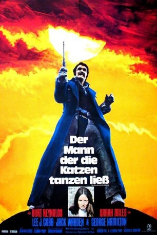

#11675 Der Mann, der die Katzen tanzen ließ
Alternativ: The Man Who Loved Cat Dancing (Englischer Titel)
 
 IMDB-Wertung: 6.2 / 10
IMDB-Wertung: 6.2 / 10  Metascore: 0
Metascore: 0 
Catherine Crocker ist ihrem Mann, einem reichen aber brutalen Rancher davongelaufen. Bei einem Überfall auf eine Eisenbahn gerät sie in die Gewalt der Banditen. Gobart, einer der Eisenbahnräuber, und Catherine verlieben sich ineinander und flüchten gemeinsam. Unterdessen hat Catherines Mann die Verfolgung aufgenommen.
Jahr: 1973
Dauer: 109 Minuten
FSK: 18
Land: USA Studio: MGMTonspuren: DD5.1 - ,
Untertitel:
Auflösung: 1080p (1920x808) Größe: 4874 MB
Genre: Western, Liebe
Regisseur: Richard C. Sarafian
Drehbuch: Marilyn Durham, Eleanor Perry, William W. Norton
Soundtrack: John Williams
Darsteller:
Datei: X:\FSK18-Western\Mann, der die Katzen tanzen ließ, Der (1973, FSK18, 1920x808).mkv seit 16.08.2019
Festplatte: FSK18
 Es gibt insgesamt 25 Filme in der Gruppe 'FSK18-Western'
Es gibt insgesamt 25 Filme in der Gruppe 'FSK18-Western'